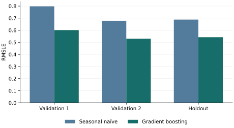

01. Capacity planning question
Restaurant managers need an estimate of daily demand before committing staff hours. The project compares two ways to forecast daily visitor totals by location across a 39-day planning horizon.
Mean absolute error (MAE) describes a typical miss in visitors per store-day. Root mean squared logarithmic error (RMSLE) computes error after adding one and taking the log of each count. It handles zero counts and puts more emphasis on relative differences than MAE does.
02. Dataset and backtest
Recruit Holdings released historical restaurant visits, reservations, and a Japanese holiday calendar for its forecasting competition. The analysis uses AIR visit and reservation records. The competition sample file sets the 39-day horizon. Evaluation covers 80,586 observed store-days across three consecutive historical windows. The latest window serves as the holdout.
Input checks enforce valid dates and nonnegative integer counts, unique store-days and calendar coverage. The loader removes reservations recorded after their visit time. Unrecorded store-days stay outside the analysis because their visitor counts are unknown.
The evaluation ran in a private Kaggle notebook using the official competition files. Recruit Restaurant Visitor Forecasting data · Competition rules
03. Forecasting workflow
- Validate inputs
- Set forecast origins
- Build dated features
- Compare models
- Test on holdout
Two models at each forecast origin
The seasonal naïve baseline repeats the last observed count for the target weekday at that location. It falls back to the store mean and then the overall mean. Histogram gradient boosting adds lead time, weekday, month, holiday, historical store averages, and booking counts available by the cutoff.
Historical snapshots respect the cutoff
Each forecast uses visits observed by the end of its origin date. Reservations must be booked before the following midnight, even when their service date falls later. The tree model trains on earlier snapshots that use the same cutoff logic. All training targets are observed by the current forecast origin. Pooled validation RMSLE chooses the model before the holdout comparison.
04. Measured forecast errors
On 28,031 holdout store-days, gradient boosting averaged 7.45 visitors of absolute error versus 9.68 for the seasonal baseline. Its holdout RMSLE was 0.542 versus 0.688.
Gradient boosting had the lower pooled validation RMSLE and was selected for the holdout capacity scenario. It reduced holdout MAE by about 23% and RMSLE by 21% relative to the baseline.
The two validation windows span Dec 27, 2016 to Mar 14, 2017. The holdout runs from Mar 15 to Apr 22, 2017.
| Window | Store-days | Seasonal MAE | Boosting MAE | Seasonal RMSLE | Boosting RMSLE |
|---|---|---|---|---|---|
| Validation 1 | 24,958 | 11.92 | 7.71 | 0.798 | 0.601 |
| Validation 2 | 27,597 | 8.67 | 6.96 | 0.678 | 0.530 |
| Pooled validation | 52,555 | 10.21 | 7.31 | 0.738 | 0.565 |
| Holdout | 28,031 | 9.68 | 7.45 | 0.688 | 0.542 |


05. Staffing scenario and limits
Suppose one shift slot can cover 18 visitors. Apply each day’s forecast, divide by capacity per slot, and round up. Add 10% to the forecast before rounding in the second scenario.
| Headroom | Modeled shift slots | Store-days above capacity |
|---|---|---|
| 0% | 47,141 | 4,933 (17.60%) |
| 10% | 50,042 | 3,903 (13.92%) |
The buffer trades 2,901 additional modeled slots for 1,030 fewer store-days above modeled capacity. This scenario uses assumed capacity. Live schedules would require staffing costs, role coverage, visitor arrival times, and service-level targets.
Validate the model across newer periods and inspect poor forecasts by location and lead time before using it for staffing. Historical results apply to store-days with a recorded AIR count. The backtest has no direct evidence on closures, new restaurants, or workload across hours of a day.
06. Reproduce the study
Run the notebook privately on Kaggle after accepting the Recruit competition terms and attaching the official data. It exports aggregate historical errors and charts. The figures here were regenerated from those exported numbers. The local test suite can run with synthetic fixtures.